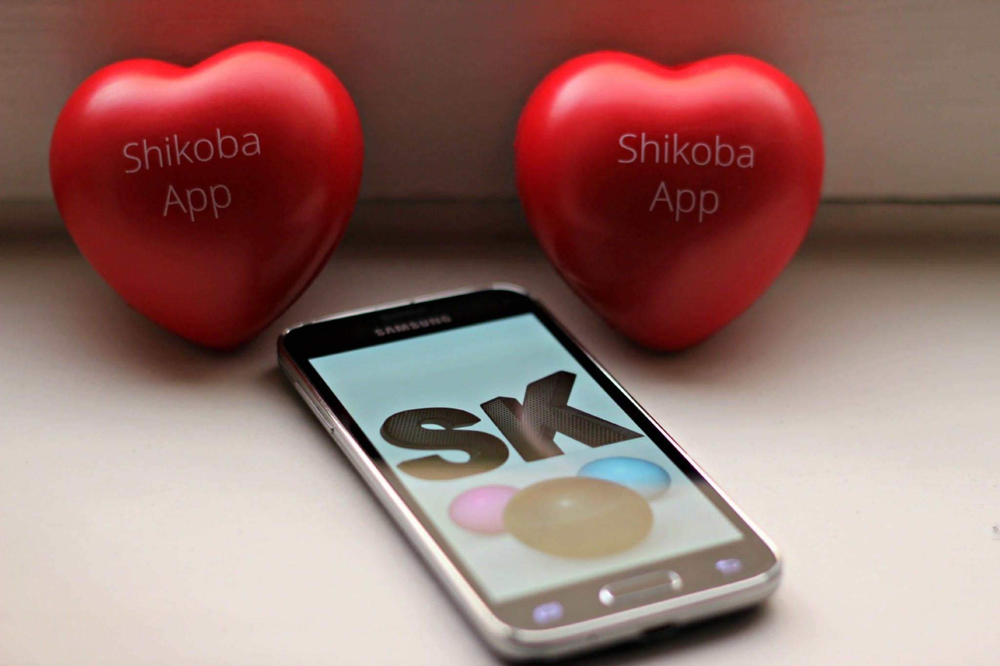
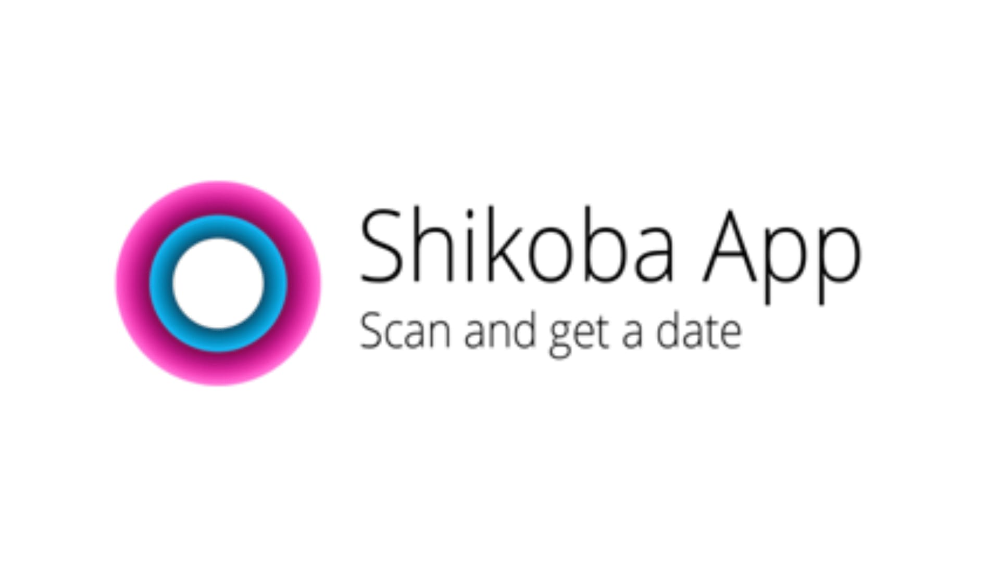
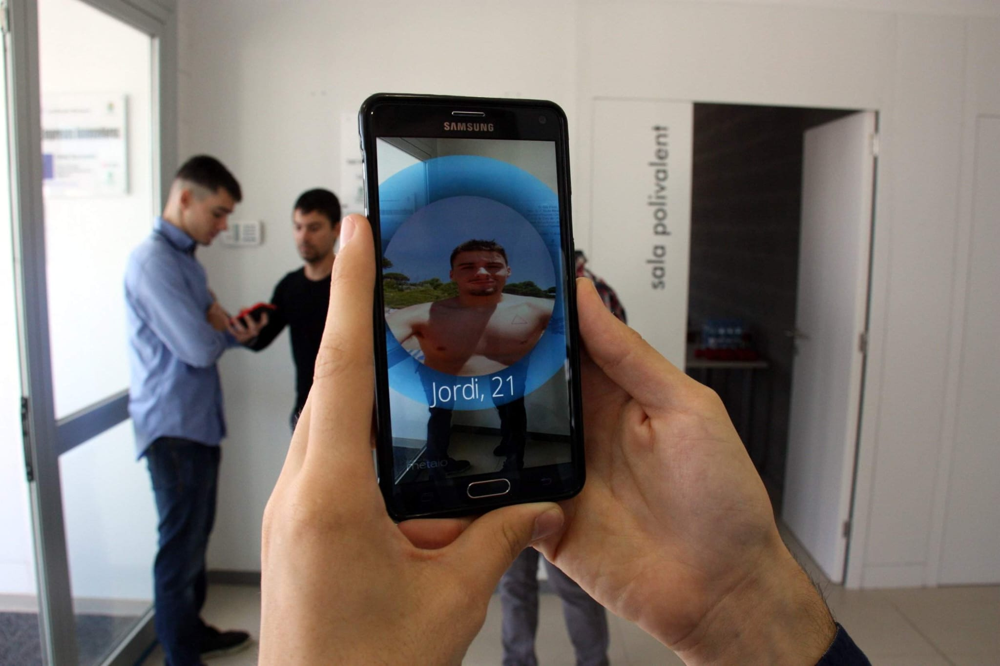

Chachi App was an Augmented Reality mobile game that transformed real-world locations into an interactive playground. Inspired by location-based experiences, players explored their city to discover and capture virtual characters, compete in leaderboards, and earn real cash prizes.
The application also incorporated social features, requiring a robust backend capable of supporting thousands of users and real-time interactions.
I initially joined the project as a Unity developer, later transitioned to backend development, took ownership of the backend architecture, and ultimately became CTO. My responsibilities included:
One of the biggest challenges was designing a backend architecture capable of supporting a growing feature set while remaining maintainable over several years of development. Applying Domain-Driven Design helped organize the system into well-defined domains, making the codebase easier to extend and evolve.
As the project expanded, balancing technical leadership with hands-on backend development became equally demanding. I coordinated a multidisciplinary team, planned development cycles, and ensured that technical decisions aligned with business objectives without compromising software quality.
Golf5 eClub is a multiplayer Virtual Reality golf experience developed for standalone VR headsets. The project focused on delivering realistic gameplay, smooth multiplayer interactions, and immersive VR mechanics while maintaining the high performance required by standalone devices such as Meta Quest and Pico.
As a Senior Unity VR Developer, I contributed to the ongoing development of the game, focusing on gameplay systems, VR infrastructure, multiplayer functionality, and platform compatibility. My responsibilities included:
One of the main technical challenges was migrating an established VR project from the Oculus Integration SDK to OpenXR without disrupting existing gameplay systems. This transition required adapting multiple VR interactions while ensuring compatibility across supported devices and preserving the user experience.
Another significant challenge was maintaining stable performance on standalone headsets. Achieving a smooth VR experience demanded continuous optimization of rendering, memory usage, and gameplay systems while supporting multiplayer functionality and multiple hardware platforms.
Yahtzee with Buddies is one of the world's most successful mobile dice games, serving millions of players through continuous live operations. The project required the constant delivery of new features, performance improvements, and high-quality updates while maintaining stability across an established production environment.
As a Senior Unity Developer, I contributed to the ongoing development of the live game, working closely with multidisciplinary teams distributed across multiple time zones. My responsibilities included:
Developing features for a live game with millions of active players required a strong focus on code quality, stability, and backward compatibility. Every new implementation had to integrate seamlessly with an existing codebase while minimizing the risk of regressions.
Another key challenge was collaborating within a fully remote, international team. Coordinating feature development across different disciplines and time zones demanded clear communication, efficient planning, and close collaboration to maintain a consistent release cadence.
Advanced Training Systems develops professional driving simulators used for commercial driver training. The project combines large-scale traffic simulation, autonomous AI systems, immersive VR experiences, and backend services to create realistic training environments for professional drivers.
The simulator recreates complex urban scenarios where autonomous vehicles, pedestrians, and traffic systems interact dynamically, providing trainees with realistic and repeatable driving exercises.
As a Senior Unity Developer, I contributed to both the simulation engine and the supporting backend infrastructure, developing scalable systems for commercial training applications.
My responsibilities included:
One of the project's biggest challenges was maintaining high performance within large-scale simulation environments populated by numerous AI-controlled vehicles and pedestrians. Achieving smooth real-time execution required continuous optimization of gameplay systems, simulation logic, and memory usage while preserving realistic behavior.
Another significant challenge involved designing modular systems that could support the continuous evolution of the simulator. The project required balancing extensibility, maintainability, and reliability across both Unity and backend components, while integrating cloud services and supporting multiple training scenarios through configurable tools.
Shikoba was an innovative mobile social networking application that combined location-based services with Augmented Reality, allowing users to discover nearby people through their smartphone camera.
The challenge was to create a smooth and intuitive AR experience capable of combining camera rendering, user positioning, backend communication, and a responsive interface on mobile devices.
As the Lead Unity Developer, I was responsible for the complete client-side development of the application. My work included:
One of the most demanding aspects of the project was implementing an Augmented Reality experience on mobile devices using Vuforia, several years before ARKit and ARCore became standard technologies.
The application required synchronizing real-time user data from the backend with the AR camera view while maintaining good performance and a responsive user experience across different mobile devices.
Another important challenge was designing a scalable client architecture that could support the continuous addition of new features throughout the project's development.





Absolutely. Whether your project is in early development or already released, I can jump into an existing codebase, understand its architecture, and help implement new features, fix issues, improve performance, or refactor systems without disrupting your workflow.
Yes. I have experience optimizing Unity projects for standalone VR devices such as Meta Quest. I can improve CPU and GPU performance, reduce memory usage, optimize rendering, and help achieve smooth frame rates while maintaining visual quality.
Of course. From simple scripting issues to complex gameplay or performance problems, I investigate the root cause, provide clear explanations, and deliver reliable, maintainable fixes instead of temporary workarounds.
Yes. I'm happy to sign a Non-Disclosure Agreement before reviewing your project or discussing confidential information. Protecting your intellectual property is important to me.
It's simple. Send me a brief description of your project, the challenges you're facing, or the features you'd like to build. We'll discuss the best approach, define the scope, and get started as soon as everything is clear.
Yes. Whether you need help fixing a critical bug, implementing a specific feature, or providing long-term support, I can adapt to your project's needs.
Yes. I can refactor legacy code, improve maintainability, simplify complex systems, and make your project easier to scale and maintain over time.
No. While VR development is one of my specialties, I also develop traditional PC, mobile, and interactive Unity applications.
Absolutely. I'm comfortable collaborating with designers, artists, producers, and other developers using Git, Plastic SCM, Agile workflows, and modern development practices.
Available for freelance projects, remote contracts, and long-term collaborations. Let's talk.
Let's build something great →